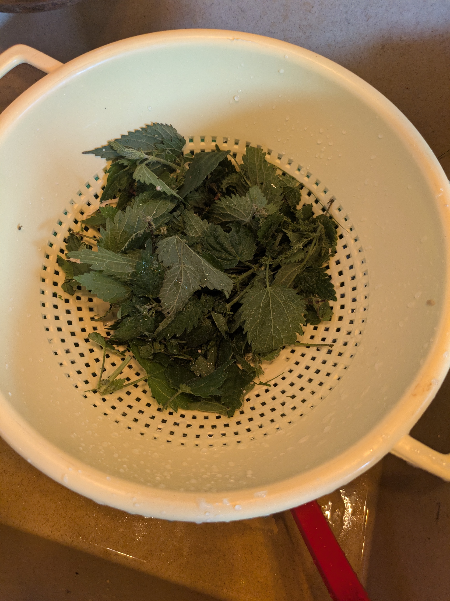
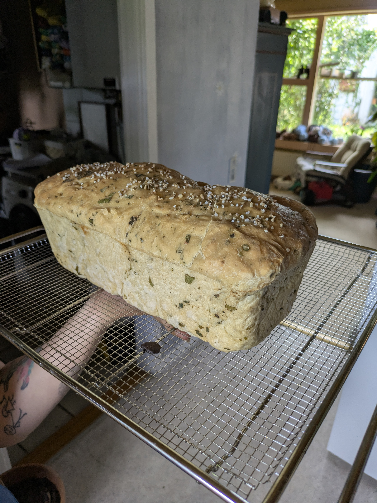
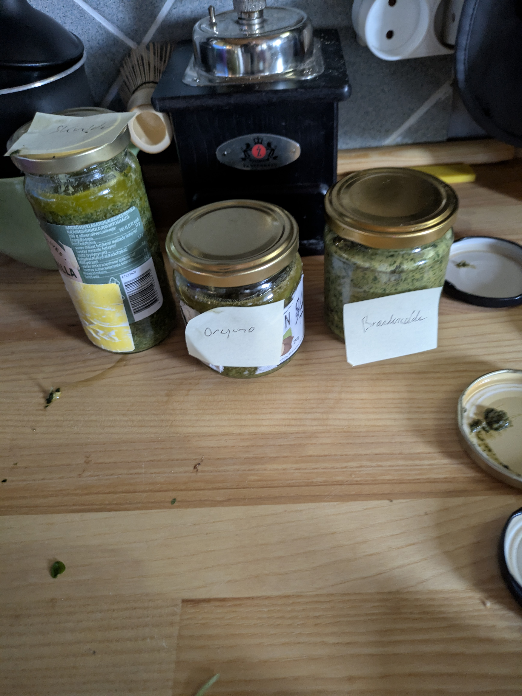
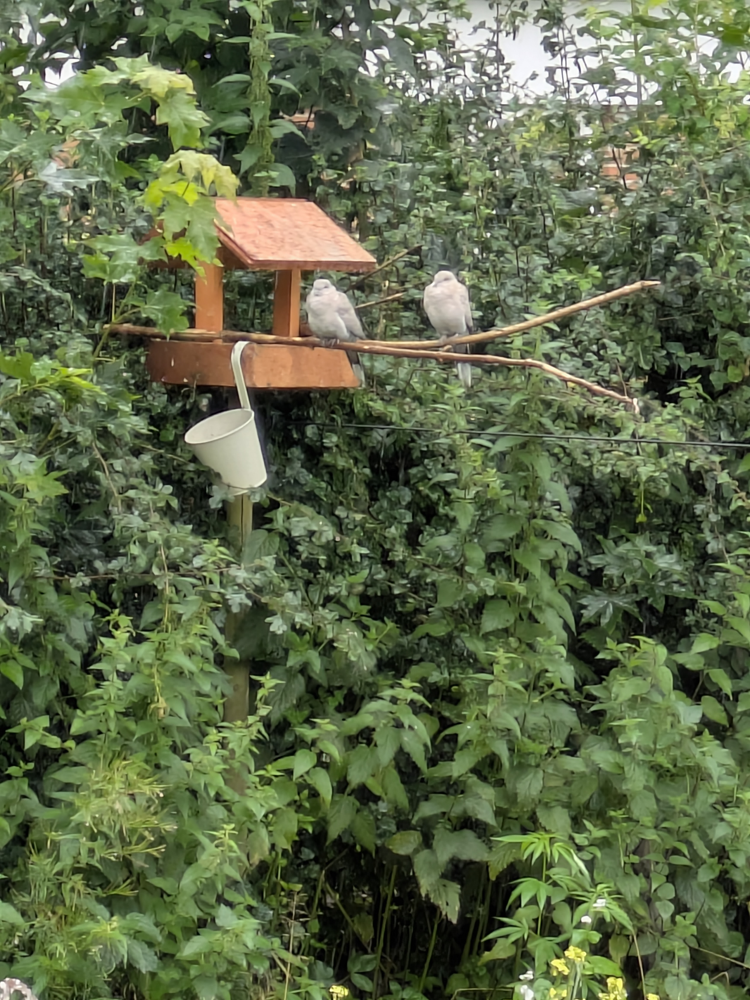
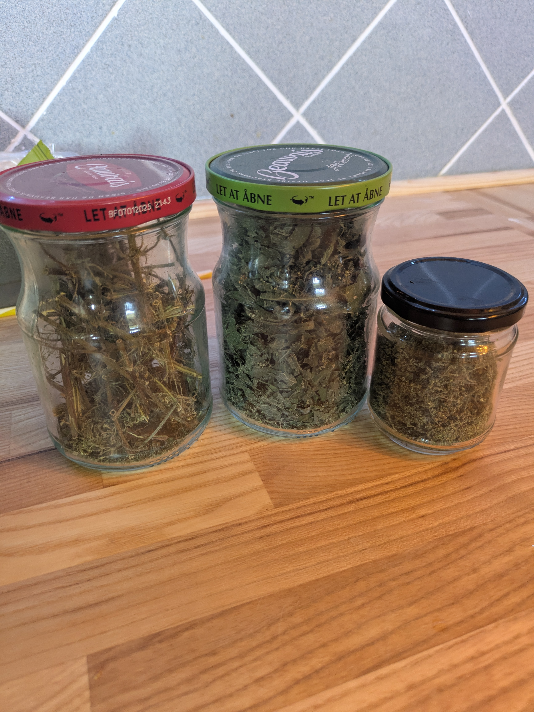
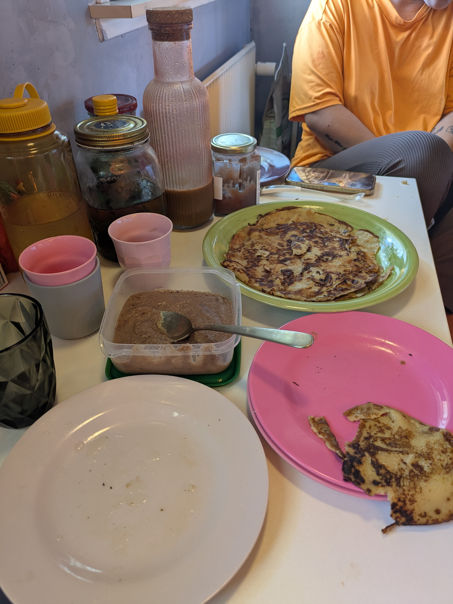
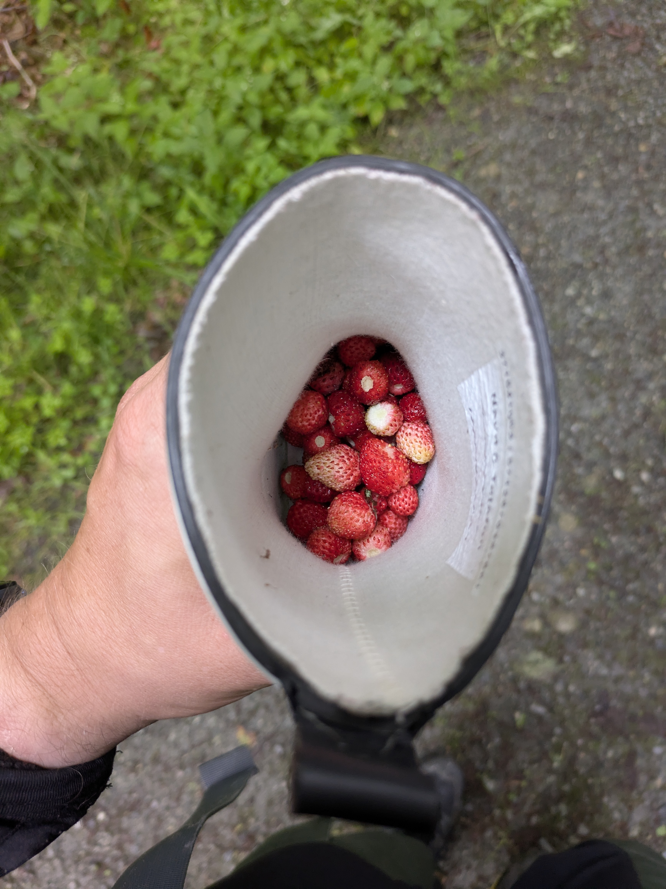
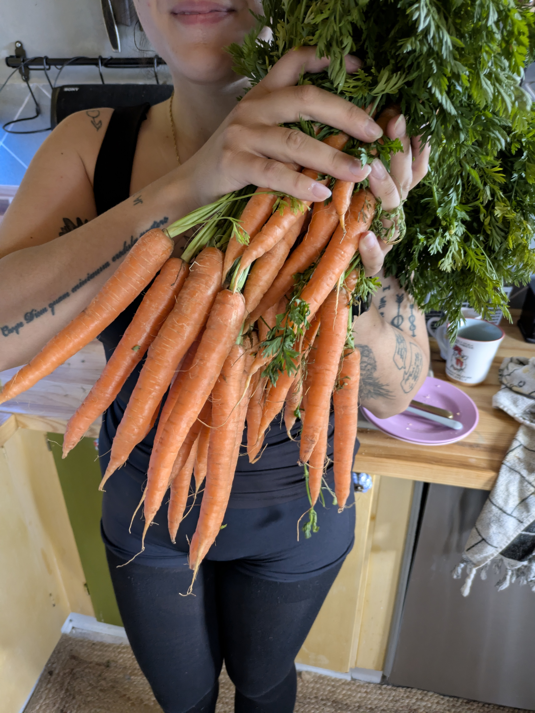
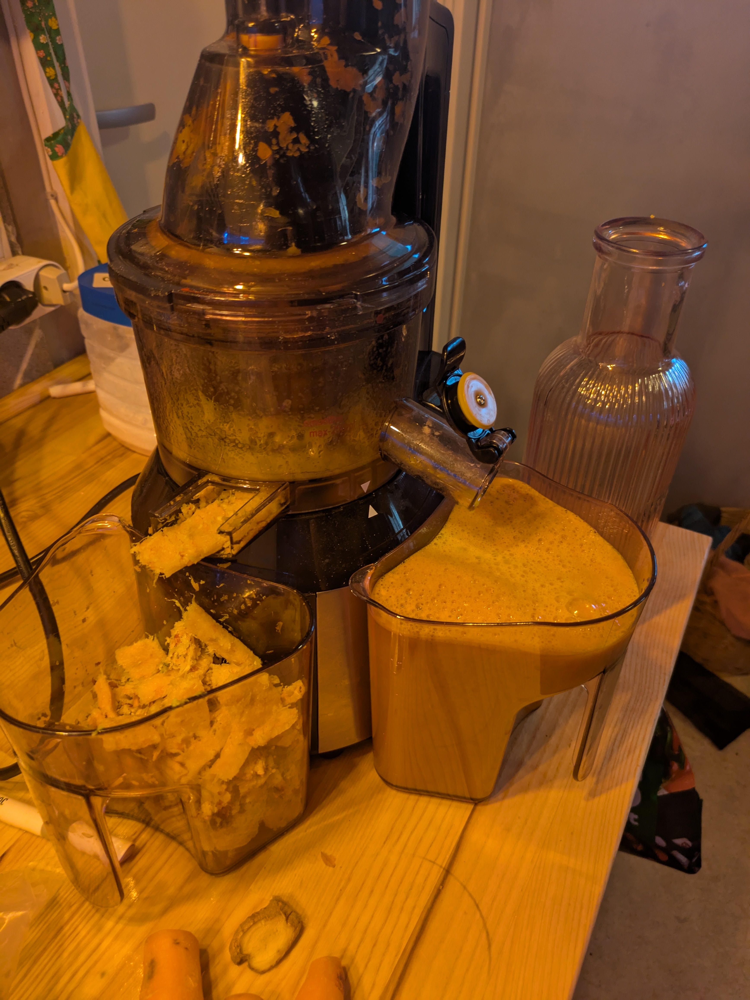
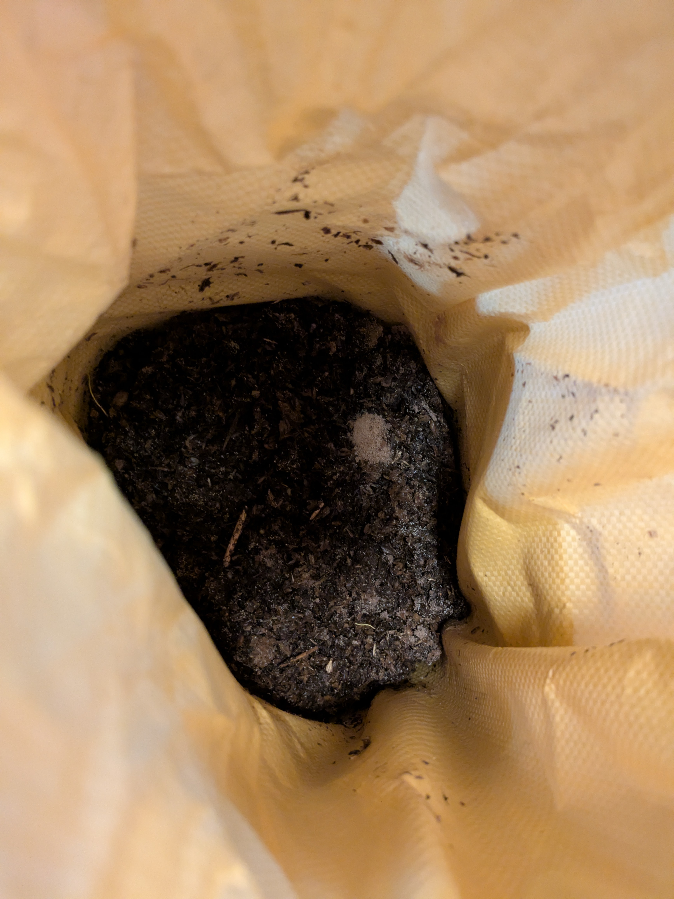

Blog og tanker
📢 10. august – En stor opdatering
Der sker simepelthen så meget her i det lille hjem, vi har mange projekter på vej og samtidig er der bare skønt med gang i den
Hvis vi starter fra toppen så er vi på forsiden af den lokale avis idag:

Lidt syret, men fedt og en vildt god artikel:
Læs gerne med
Vi har opdaget at fuglefrøende har selvsået forskellige planter, her er en hamp plante godt på vej op -'.🌿.'-
Jeg er begyndt at planlægge næste udbygning - et kæmpe drivhus/orangeri bygget til huset:

Indtil videre er planen at udbygge her 3m ud og 6m hen, men er lidt usikker på solforholdene
Sidste bageide og tur i køkkennet, førte til hjemmebagt urte brød og pestoer - lavet af havens "ukrudt" og urter.

Her er første omgang høstede nælder til brød og pesto

Et virkelig godt brød, der næste gang,. skal have dobbelt så mange urter og "urukdt" ift smag.

olivenolie, salt/peber, gærflager også første med skvalderkål, næste oregano og sidste brændenælder
Inden jeg slutter af fandt jeg dette skønne syn i Vejle den anden dag, sommerfugle fest midt i byen:

En skøn lille "oase" af vild med vilje, som en gruppe sommerfugle havde fundet
Dertil kan vi fortælle, at d. 20. september kommer der virkelig gang i den, her ude i den lille by. Sæt kryds i kalenderen, detaljer kommer senere.
🐦 03. august – En skøn ferie er forbi
En meget dejlig ferie er forbi, som vi har brugt i det lille hjem.
Vi har blandt andet samlet en del af sommerens planter og bær, nu venter vi på de første frugter. Æbler, blommer mm. er klar til plukning.

Vi havde fået 3 forskellige typer myrer, så for ikke at skulle fjerne dem med gift eller andet,
gravede jeg hele terrassen op for at finde dronningerne og flytte dem. Derudover har vi brugt specielt sand mm. der, hvor vi ikke ønsker, at de flytter ind igen.

Et lille glimt ind i vores skønne vild med vilje have

Et par spurve, der hygger sig en mandag formiddag
🌿 13. juli – Tørring af nælder
Nælderne er høstet og sat til tørre – både til te, mad og frø som superfood senere på året.

Nælder hænger til tørre – de skal tørre i ca. 2 uger

Frø, stængler og blade tørres hver for sig – her er de lavet i dehydrator
🍽️ 10. juli – Morgenmad af hjemmelav
Dagens morgenmad er lavet af rester og kærlighed – præcis som vi kan lide det.

Madspildspandekager, hjemmelavet banannutella og marmelade

Nutellaen er lavet af resterne fra bygkaffe – tilsat lidt olie, kaffesirup og kakao

Vi laver ofte cold brew-te af urter fra haven og juice af gratis gulerødder 🥕
🌿 09. juli – Sankedag
Vi sanker ofte – i dag gik vi efter svampe, men kom hjem med en god portion bær i stedet.

Glemte posen... godt Atlas havde en støvle med 🍓

Hindbærrene er ved at være helt klar

Heidi i fuld gang – vi har fundet et nyt bær-spot 🌲
🥕 06. juli – Gratis madspild!
Vi fik en stor portion gulerødder, der ellers skulle være smidt ud – tak til Brugsen for at redde mad med os.

Brugsen havde en del gulerødder til overs – dem fik vi med hjem
🎉 02. juli – Vi er i Zetland!
Så skete det – vi gik (lidt) viralt! Og hold nu op, hvor er vi blevet mødt af positiv respons 💚
Her er den første artikel om os, skrevet af den søde og skarpe Clara fra Zetland. Hun har virkelig fanget både stemningen og vores tanker om det planetariske råderum:
👉
Læs artiklen hos Zetland
Tak til alle jer der har læst, delt, skrevet og heppet. Det betyder mere end I tror.
🍹 29. juni – Juice, hygge og havredrik
Weekenden bød på slow living og køkkenhygge. Vi lavede frisk juice og hjemmelavet havredrik – og ja, ungerne var med hele vejen 💚

Juice af madspilds gulerødder og lidt citron – sundt og farverigt

Havredrik på 5 minutter – nemt, billigt og uden emballage 🌾
🐛 25. juni – Kompostorme er kommet
6 kg orme til komposten – den første tønde er klar til nedbrydning. Vi har også fået en god omgang myrer i den, så nu skal der kæmpes om pladsen 🐜💥

Pakket i savsmuld og klar til kamp – myrerne har fået konkurrence 🐜🆚🐛

Nu må vi se, hvem der vinder: orme eller myrer? Vi hepper på ormehæren 💪
☕ 24. juni – Savner vi kaffe?
Ja og nej – vi venter på en ny kværn købt på DBA til bygkaffen 🌾, så der er lidt savn... men vi holder stand 💪
🔥 22. juni – Planetært.dk er flyvende
Ja, vi har færdiggjort hjemmesiden, det er småting fra nu af. Stolt og træt, det har været hårdt arbejde.
🧠 21. juni – Vaner og lyst
Det sværeste er ikke altid afsavn, men vanens magt. Vi begynder at arbejde med vores snack-trang, emotionel spisning og digitale triggers.
🧊 21. juni – Sommer og is
Vi erkender det: vi har spist 100 is i år. Men vi lærer – og sætter mål om kun hjemmelavede, veganske alternativer resten af 2025
🎟️ 20. juni – Ud at spise planetært
Vi spiser ude – vegansk, delt, småretter. Selv med dessert og fritter ligger vi stadig markant under gennemsnit. Det kan lade sig gøre.
🧃 17. juni – Farvel kaffe
Vi tager det store skridt og siger farvel til kaffe. Klimaaftrykket er for højt. Vi prøver ristet byg i stedet.
🚿 15. juni – Vand, vand, vand
Vores forbrug er langt under det danske gennemsnit – og stadig ser vi potentiale i regnvand, tidsstyring og mere genbrug.
🎨 8. juni – Vi bygger Planetært.dk
Vi er ved at være færdig med vores hjemmeside - Fra bunden. For at dele erfaringer, opdatere løbende og inspirere andre til at turde tælle med.
📉 1. juni – Vi er under 100 %
Det lykkes. Vores samlede aftryk i maj er under de planetære grænser. Vi fejrer det med bløde grin og nye spørgsmål.
🧺 22. maj – Vasketøj og værdier
Hvordan hænger vores vaskemaskinevalg sammen med CO₂ og kollektive løsninger? Vi undersøger mulighederne.
🥾 17. maj – Første overnatning i haven
Vi sover under stjernerne – uden strøm, men med grin og fuglesang. Det vil vi gøre igen!
🍝 8. maj – Madspildsretter
Vi laver lækre retter ud af kasserede fødevarer. Fisk, yoghurt og kylling fra datovarer bliver til festmåltider med lavt klimaaftryk.
🪴 3. maj – Vi planter til bierne
Græsset får lov at vokse – og vi sår til bestøvere og biodiversitet. Haven bliver vild, smuk og levende.
🧁 27. april – Cashew og kokos, nej tak
Vi forsøger hjemmelavet vegansk smør – men må konstatere: kokos er ikke planetært. Vi dropper det igen og laver med havre og lokal rapsolie - det blev godt!
📦 20. april – 100 planetariske levemål
Vi begynder at formulere vores egne 100 planetariske ideer Små ændringer – stor forskel. Det bliver vores pejlemærke.
🎂 12. april – Fødselsdag og balance
Sushi, is og fest – og stadig under 100 %. Vi lærer at det handler om balance og bevidste valg, ikke askese.
💡 4. april – Strøm under gennemsnittet
Vores elforbrug ligger markant under det danske gennemsnit. Vi bruger 4–6 kWh dagligt. Det føles realistisk og trygt.
🔥 30. marts – Gassen slukket helt
Vi prøver at slukke for gas helt i en måned. Resultat: vi klarer os "næsten" – og forbruget styrtdykker.
🚲 21. marts – Jedi Cruiseren
Vores el-ladcykel får navn – og bliver vores primære transportmiddel. Vi får aldrig bil igen. Punktum.
🧁 12. marts – Hjemmelavet hygge
Vi laver blåbærmuffins, dadelkugler og snacks uden emballage og animalsk fedt. Nye vaner spirer frem.
🍦 6. marts – 88 is på et halvt år
Vi regner på is-forbruget: 88 is svarer til et uforholdsmæssigt stort klimaaftryk. Tiden er inde til at lave selv.
🐔 2. marts – Hønsene rykker ind
Vores høns spiser madrester og leverer æg. Samtidig minimerer de vores madspild. Win-win.
📉 20. februar – Farvel til dumle og sodavand
Vi begynder at skære snacks væk. Dumle, vingummi og softice viser sig at være rene klimabomber. Svært – men nødvendigt.
🌍 11. februar – Vores forbrug i tal
Vi regner hele januar sammen: strøm, gas, vand, mad og indkøb. Vi ligger på 150 % af det planetære råderum. Mål: 100 %.
🧺 4. februar – Vaskemaskinen tæller med
Vi udregner præcis CO₂ for hver vask. Vi tester genbrugsvand og reducerer fra 5 til 2 ugentlige vaske.
🚿 29. januar – Genbrug af vand
Vi begynder at opsamle badevand og skyllevand fra opvask. Det bliver brugt i haven og til toiletskyl.
🍗 24. januar – Kød og madspild
Vi beslutter: kød er ok – hvis det alligevel skulle smides ud. Vi fokuserer på madspild og lokale ressourcer.
🌾 18. januar – Kaffepause med byg
Vi rister byg og laver vores første planetære kaffe. Smager anderledes – men føles godt. Kaffemaskinen ryger ud.
🥶 10. januar – Vi slukker gulvvarmen
Første hårde valg: varmen i gulvet ryger. Vi holder os varme med uld og små bevægelser. Resultat: 50 % lavere gasforbrug.
♻️ 5. januar – Tøj: nyt eller genbrug?
Vi laver en liste over, hvor meget tøj vi egentlig har – og vælger at købe langt mindre (og kun brugt eller planetært produceret).
📊 1. januar – Vi måler alt
Året starter med ét mål: at forstå vores klimaaftryk. Vi begynder at registrere strøm, varme, mad, indkøb, affald – alt.